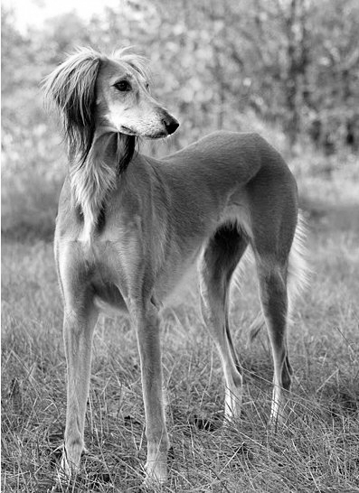
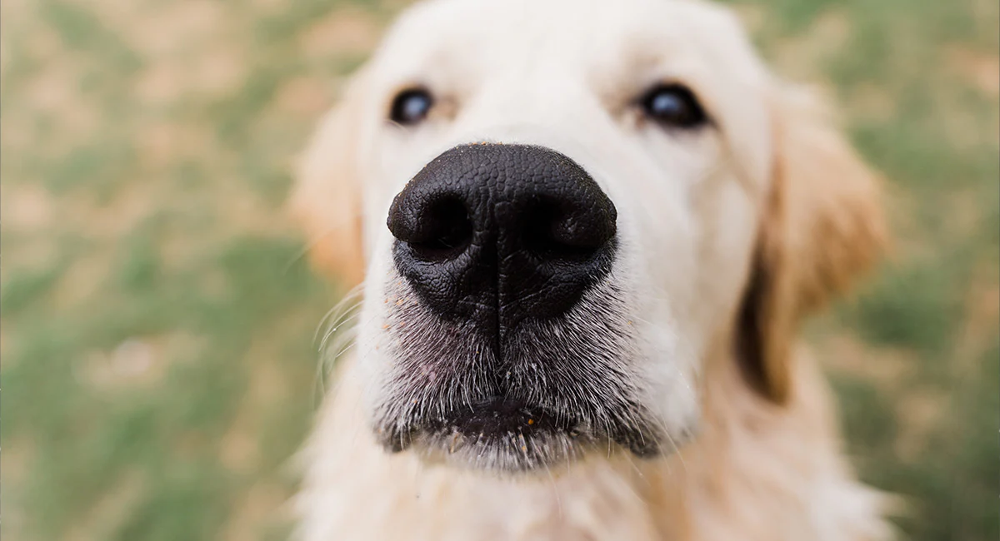
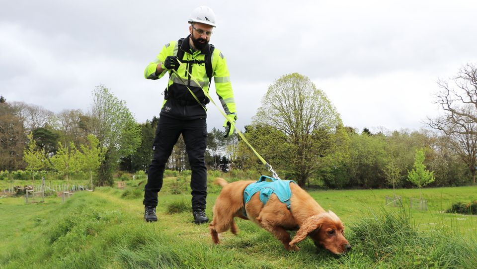
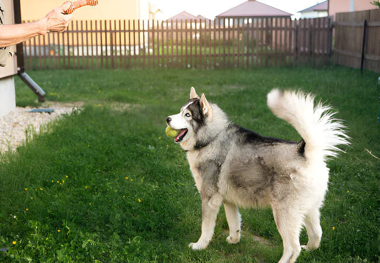
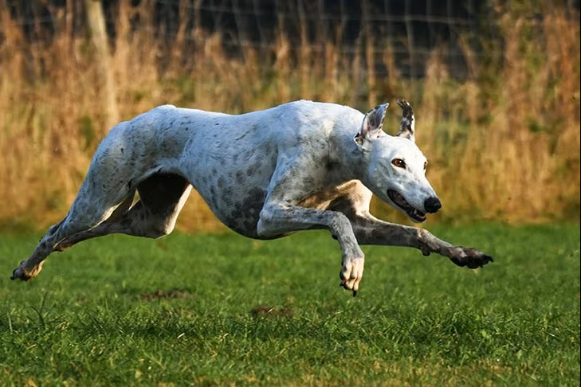

Saluki Dog
- Oldest Breed : The Saluki is considered one of the world's oldest dog breeds, dating back over 5,000 years to ancient Egypt.
- Unique Nose Prints : Just like human fingerprints, every dog's nose print is unique and can be used for identification.
- Dreaming Dogs : Dogs experience REM (Rapid Eye Movement) sleep and can dream. That's why you may see them twitching, barking softly, or "running" in their sleep.
- Super Sniffers : A dog's sense of smell can be up to 100,000 times stronger than that of a human.
- Tail Language : Dogs use their tails to communicate emotions. Right-side wagging often signals happiness, while left-side wagging can indicate stress or uncertainty.
- Fast Runners : Greyhounds can reach speeds of up to 45 mph (72 km/h), making them the fastest dog breed.
- Amazing Hearing : Dogs can hear sounds at frequencies up to 65,000 Hz, compared to humans, who typically hear up to about 20,000 Hz.





Greyhound